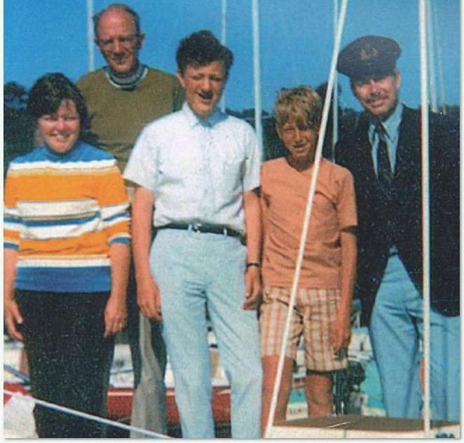

Bill 6ates và Paul Allen đã trở thành những cái tên nổi tiếng nhờ thành công của Microsoft. Nhưng ở Lakeside, còn một thành viên thứ ba của băng nhóm thần đồng máy tính trung học này. Kent Evans và Bill 6ates trở thành bạn thân vào năm lớp tám. Theo lời kể của Gates, Evans là học sinh giỏi nhất lớp. (3 hai đã nói chuyện “qua điện thoại với nhau một cách thoải mái”, 6ates nhớ lại trong bộ phim tài liệu Inside BilIs Brain. “Tôi vẫn nhớ số điện thoại của Kent," ông nói: '525-7851. twans cũng thành thạo máy tính như 6ates và Allen. Lakeside đã từng phải vật lộn để sắp xếp lịch học của trường theo cách thủ công - một mê cung phức tạp để đưa hàng trăm học sinh vào các lớp học mà họ tham dự vào những thời điểm không mâu thuản với các khóa học khác. Nhà trường giao nhiệm vụ cho Bill và Kent — lớp tám, bằng mọi cách xây dựng một chương trình máy tính để giải quyết vấn đề. Nó đã làm việc. Và không giống như Paul Allen, Kent có chung đầu óc kinh doanh và tham vọng vô tận của Bill. 6ates nhớ lại: “Kent luôn có một chiếc cặp lớn, giống như chiếc cặp của luật sư. Chúng tôi luôn lập kế hoạch về những gì sẽ làm trong 5 hoặc 6 năm tới. Chúng tôi có nên trở thành CF0? Bạn có thể bị ảnh hưởng gì? Chúng fa có nên làm tướng? Chúng ta có nên trở thành đại sứ?” Dù đó là gì, Bill và Kent biết họ sẽ làm điều đó cùng nhau. Sau khi hồi tưởng về tình bạn với Ken†, 6ates xúc động. “Chúng tôi sẽ tiếp tục làm việc cùng nhau. Tôi chắc chúng tôi sẽ học đại học cùng nhau.” Kent có thể là đối tác sáng lập của Microsoft với 6ates và Allen. Nhưng nó sẽ không bao giờ xảy ra. Kent chết trong một vụ tai nạn leo núitrước khi tốt nghiệp trung học cơ sở.
